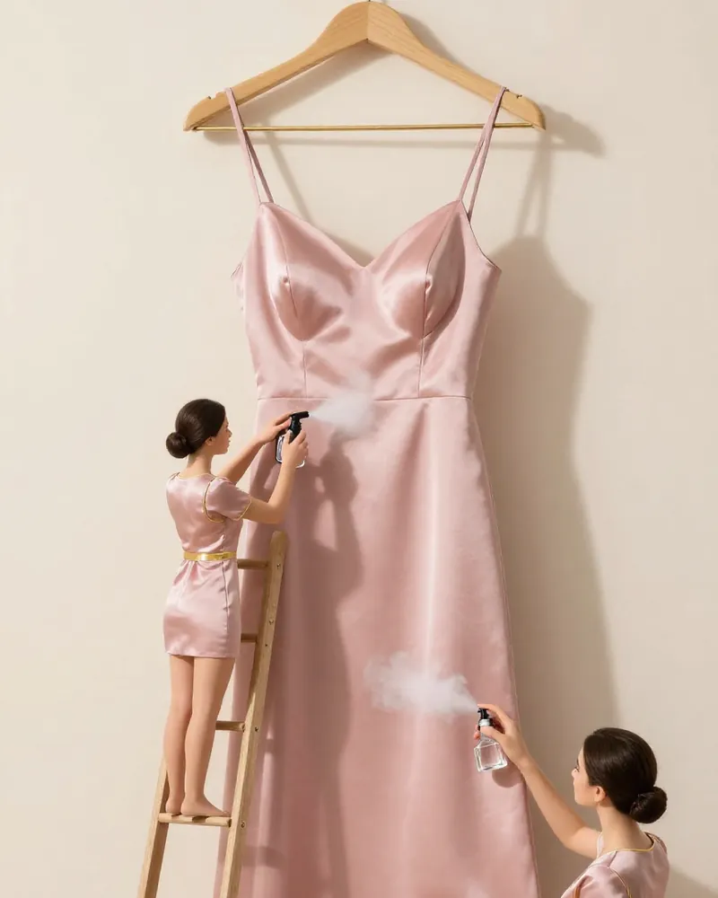

Steaming vs ironing your abaya and hijab

An abaya that spent the day folded in a bag, or a hijab creased from the car seat, can make a whole outfit look tired. Steam usually fixes it faster than an iron, and more gently.
When to steam
- Crepe, nida and chiffon abayas: steam relaxes the creases without leaving a shine.
- Chiffon and jersey hijabs: steam keeps the drape soft.
- Embellished pieces: steam from inside, so beads and embroidery are never pressed.
When to iron
- Cotton and linen that need a sharp line.
- Always on low heat with a pressing cloth for dark fabrics, to avoid shiny marks.
Scent without stains
Spray perfume from at least 30 cm, on the inside of the fabric or into the air and walk through it. Oils and bakhoor smoke are beautiful but can mark light silk, so test on a hidden seam first.
At QAMAR
While you shower, we steam your abaya, dress or hijab and give it a light scent, so you leave with everything fresh at the same time. Women only, opening March 2027 off Sheikh Zayed Road.
Discover QAMAR